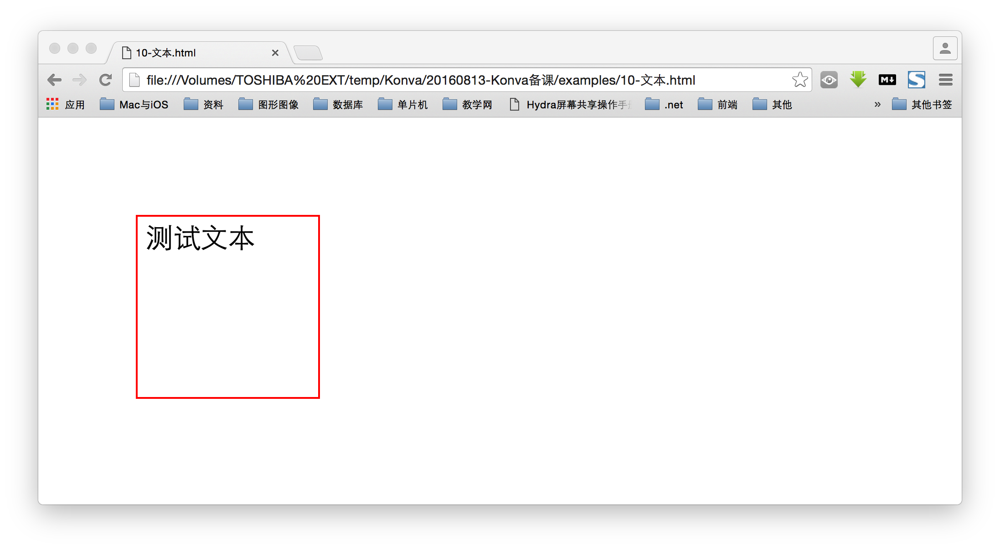

KonvaJS 基础讲义
常用的图像框架有很多
还有很多, 公司不同就有不同的项目被开发出来.
KonvaJS 快速入门
Konva 是一个 基于 Canvas 开发的 2d js 框架库, 它可以轻松的实现桌面应用和移动应用中的图形交互交互效果.
Konva 可以高效的实现动画, 变换, 节点嵌套, 局部操作, 滤镜, 缓存, 事件等功能, 不仅仅适用于桌面与移动开发, 还有更为广泛的应用.
Konva 允许在舞台上绘图, 添加事件监听, 移动或缩放某个图形, 独立旋转, 以及高效的动画. 即使应用中含有数千个图形也是可以轻松实现的.
使用 Konva
- 打开链接 http://konvajs.github.io/, 下载 KonvaJS 代码.
- 开发中为了方便调试, 使用完全版. 实际使用使用压缩版.
- 使用 script 标签导入需要使用的 Konva 库.
<script src="konva.js"></script>
KonvaJS 的理念
任何图形都存在于舞台中( Konva.Stage ). 这个舞台中又可以包多个用户层( Konva.Layer ).
每一个层中都含有两个 <canvas> 着色器: 一个前台渲染器, 一个后台渲染器.
前台渲染器是可以看见的部分, 而后台渲染器是一个隐藏的 canvas.
后台渲染器为了提高效率实现事件监听的工作.
每一个层可以包含形状( Shape ), 形状的组( Group ), 甚至是由组组成的组. 舞台, 层, 组, 以及形状都是虚拟的节点( node ). 类似于 HTML 页面中的 DOM 节点.
例如图形:

在这个图形中, 首先有一个舞台( Stage ). 该舞台在页面中与整个页面的大小一样. 然后舞台中有一个层( Layer ). 层中有一个矩形( Rect )和一个圆形( Circle ). 因此就有一个树结构:
所有的节点都可以设置样式与变化. 即使 Konva 可以重新渲染形状, 例如: 矩形,
圆形, 图片, 精灵, 文本, 线段, 多边形, 正多边形, 路径, 和星星等.
但是开发者依旧可以根据 Shape 类的模板自定义自己的图形, 然后重写 draw 方法.
只要拥有了 舞台( Stage ), 并且上面放置了层( Layer )和图形( Shape ), 那么就可以为他添加事件监听, 变换节点, 运行动画, 使用路径, 甚至是更多的效果.
例如要实现上面的案例:
- 需要引入 Konva.js 文件
<script src="konva.js"></script> - 然后页面中放置一个容器作为 Konva 处理的对象. Konva 会在该容器中添加 canvas 标签. 值得说明的是, 需要为这个标签添加 id 属性.
<div id="dv"></div> - 然后编写 js 代码. Konva 是一个完全面向对象的库.
- 创建舞台
var stage = new Konva.Stage({ container: 'dv', width: window.innerWidth, height: window.innerHeight });- 首先, 在 Konva 中所有的图形都是在 Konva 中的一个构造函数. Konva 是全局的命名空间.
- 创建舞台使用的是 Stage 构造函数. 该函数需要提供参数.
- Konva 中所有图形的参数都是使用 json 对象的方式进行提供.
- 舞台需要设置容器的 id, 即 container 属性. 以及宽( width ), 高( height ).
- 舞台中可以放置一个到多个层( Layer ), 所有的图形应该放在在层中.
- 首先创建层对象. 层对象不需要传递参数.
var layer = new Konva.Layer(); - 将层添加到舞台中. Konva 中凡是添加, 都是使用 add 方法.
stage.add( layer );
- 首先创建层对象. 层对象不需要传递参数.
- 在层中放置一个矩形, 就创建一个 矩形对象.
- 矩形对象需要四个参数来确定, 分别是 左上角的两个坐标, 和 宽与高.
var rect = new Konva.Rect({ x: 100, y: 50, width: 200, height: 100, fill: 'red' }); - Konva 中添加颜色使用 fill 属性和 stroke 属性, 分别表示填充颜色与描边颜色.
- 将矩形添加到 层中
layer.add( rect );
- 矩形对象需要四个参数来确定, 分别是 左上角的两个坐标, 和 宽与高.
- 在层中添加一个圆形, 使用构造函数 Circle
var circle = new Konva.Circle({ x: stage.getWidth() / 2, y: stage.getHeight() / 2, radius: 100, fill: 'pink', stroke: 'blue' }); layer.add( circle );- Konva 中使用 radius 设置圆形的半径.
- Konva 中如果需要获取对象的数据, 使用 getXXX 方法. 传入参数即设置, 不传参数就是获取数据.
- 最后绘图使用 draw 方法
layer.draw();
基本形状
Konva.js 支持的形状有: 矩形( Rect ), 圆形( Circle ), 椭圆( Rllipse ), 线段( Line ), 图像( Image ), 文本( Text ), 文本路径( TextPath ), 星星( Start ), 标签( Label ), SVG 路径( SVG Path ), 正多边形( RegularPolygon ). 同时也可以自定义形状.
- 自定义形状使用 Shape 构造函数创建
- 需要提供自定义的绘图方法 sceneFunc
var triangle = new Konva.Shape({ sceneFunc: function ( ctx ) { // 自定义绘图路径 ctx.moveTo( window.innerWidth / 2, window.innerHeight / 4 ); ctx.lineTo( window.innerWidth / 2 - window.innerHeight / ( 2 * 1.732 ), window.innerHeight * 3 / 4 ); ctx.lineTo( window.innerWidth / 2 + window.innerHeight / ( 2 * 1.732 ), window.innerHeight * 3 / 4 ); ctx.closePath(); // Konva.js 的独有方法 ctx.fillStrokeShape( this ); }, fill: 'pink', stroke: 'red' }); - 将图形添加后绘图
layer.add( triangle ); layer.draw();
效果
样式
所有的形状都支持下列样式属性:
- 填充. 颜色, 渐变或图片.
- 描边. 颜色与宽度.
- 阴影. 颜色, 偏移量, 透明度与模糊
- 透明度
绘制正五边形
构造函数: Konva.RegularPolygon( options )
常用属性:
- x, y. 表示正多边形的中心坐标.
- sides. 表示正多边形的边数.
- radius. 表示半径.
- fill. 填充颜色.
- stroke. 描边的颜色.
- strokeWidth. 描边的宽度.
- shadowOffsetX 和 shadowOffsety. 描述背景的偏移量.
- shadowBlur. 表示模糊程度.
- opacity. 表示透明度( 取值在 0, 1 之间 ).
案例
var shape = new Konva.RegularPolygon({
x: stage.getWidth() / 2,
y: stage.getHeight() / 2,
sides: 5,
radius: 70,
fill: 'red',
stroke: 'black',
strokeWidth: 4,
shadowOffsetX: 20,
shadowOffsetY: 25,
shadowBlurBlur: 40,
opacity: 0.5
});
layer.add( shape );
效果
事件
使用 Konva 可以轻松的实现监听用户添加的事件. 例如 click, dblclick, mouseover, tap, dbltap, touchstart 等. 属性值变化事件. 例如 scaleXChange, fillChange 等. 以及拖拽事件. 例如 dragstart, dragmove, dragend.
代码
circle.on( 'mouseout touchend', function () {
console.log( '用户输入' );
});
circle.on( 'xChange', function () {
console.log( '位置发生改变' );
});
circle.on( 'dragend', function () {
console.log( '拖动停止' );
});
拖拽与降低
Konva 支持拖拽的功能. 也支持下降事件( drop, dropenter, dropleave, dropover ).
如果需要实现拖拽的功能. 可以设置 draggable 属性为 true.
- 创建的时候设置属性
- 创建后使用方法设置属性
shape.draggable( true );
Konva 还支持给拖拽事件添加移动范围.
滤镜( Filter )
Konva 支持多种滤镜功能. 例如: 模糊, 翻转, 声音等.
案例
动画
Konva 中可以使用两种方式创建动画
- 使用 Konva.Animation
var anim = new Konva.Animation(function ( frame ) { var time = frame.time, timeDiff = frame.timeDiff, frameRate = frame.frameRate; // 更新代码 }, layer ); 使用 Konva.Tween
var tween = new Konva.Tween({ node: rect, duration: 1, x: 140, rotation: Math.PI * 2, opacity: 1, strokeWidth: 6 }); // 或者使用新的短方法 circle.to({ duration: 1, fill: 'green' });
选择器
当构建规模较大的应用时, 如果可以对元素进行搜索是非常方便的. Konva 使用选择器来实现元素的查找. 使用 find() 方法返回一个集合. 使用 findOne() 方法返回集合中的第 0 个元素.
- 给元素提供 name 属性, 可以使用 '.name' 来进行获取. 类似于类选择器.
- 使用构造函数的名字也可以作为名字选择器. 类似于标签选择器.
- 使用 id 属性, 则使用 '#id' 来获取.
- 查找方法使用层对象来调用.
案例
...
var r = 100;
var c1 = new Konva.Circle({
x: stage.getWidth() / 8,
y: stage.getHeight() / 2,
radius: r,
fill: 'red',
stroke: '#000',
id: 'c1'
});
layer.add( c1 );
var c2 = new Konva.Circle({
x: stage.getWidth() / 8 * 3,
y: stage.getHeight() / 2,
radius: r,
fill: 'red',
stroke: '#000',
name: 'c'
});
layer.add( c2 );
var c3 = new Konva.Circle({
x: stage.getWidth() / 8 * 5,
y: stage.getHeight() / 2,
radius: r,
fill: 'red',
stroke: '#000',
name: 'c'
});
layer.add( c3 );
var c3 = new Konva.Circle({
x: stage.getWidth() / 8 * 7,
y: stage.getHeight() / 2,
radius: r,
fill: 'red',
stroke: '#000'
});
layer.add( c3 );
layer.find( '.c' ).each(function ( v, i ) {
v.fill( 'pink' );
});
layer.find( '#c1' ).forEach(function ( v, i ) {
v.stroke( 'blue' );
v.strokeWidth( 10 );
});
layer.find( 'Circle' ).each( function ( v, i ) {
v.stroke( 'green' );
});
...
序列号与反序列化
所有被创建的对象都可以保存为 JSON 对象. 可以在服务器或本地存储中使用它.
var json = stage.toJSON();
同时, 也可以从 JSON 中恢复 Konva 对象.
var json = '{"attrs":{"width":578,"height":200},' +
'"className":"Stage", ' +
'"children":[{ ' +
'"attrs":{},' +
'"className":"Layer",' +
'"children":[ ' +
'{"attrs":{ ' +
'"x":100,"y":100,' +
'"sides":6,"radius":70,' +
'"fill":"red","stroke":"black",' +
'"strokeWidth":4},' +
'"className":"RegularPolygon"}' +
']' +
'}]}';
var stage = Konva.Node.create(json, 'container');
形状 Shape
矩形 Rect
创建语法: new Konva.Rect( config )
常用属性:
cornerRadius属性. 数字类型, 表示圆角矩形的圆角半径.fill属性. 字符串, 设置填充颜色.stroke属性. 字符串, 设置描边颜色.dash属性. 数组, 用于描述虚线的间隔.x,y, width, height 属性. 数字, 描述矩形的位置与宽高.name,id属性. 字符串, 用于设置搜索标记.opacity属性. 数字, 用于设置透明度.scaleX,scaleY属性. 数字, 用于设置缩放变换.rotation属性. 数字, 用于设置旋转角度.draggable属性. 布尔类型, 用于设置是否允许拖拽.lineJoin,lineCap属性. 设置线样式.
常用方法:
- Konva 中构造函数的属性多半有同名的方法.
toJSON()方法. 将动画转换成 json 字符串.to( params )方法. 使用 Tween 动画.setAttrs( config )与setAttr( attr, val )方法, 用于重新设置属性.remove()方法. 将当前对象删除, 但是销毁.on( evtStr, handler )与off( evtStr )方法, 用于添加与移除事件.
案例
...
var rect = new Konva.Rect({
x: 100, y: 100,
width: 200, height: 100,
stroke: 'red', fill: 'pink'
});
layer.add( rect );
...
圆 Circle
创建语法: new Konva.Circle( config )
常用属性:
radius属性. 数字类型, 用于设置半径.fill,stroke属性.strokeWidth属性.lineJoin,lineCap属性.dash属性.x,y属性
常用方法:
椭圆 Ellipse
创建语法: new Konva.Ellipse( config ).
常用属性:
x,y属性. 数字类型, 表示椭圆中心的坐标radius属性. 对象类型, x, y 分别表示椭圆的长轴与短轴.
案例
var ellipse = new Konva.Ellipse({
x: stage.getWidth() / 2,
y: stage.getHeight() / 2,
radius: {
x: 100, y: 100
},
stroke: 'red',
fill: 'pink',
rotation: 30
});
效果
楔形 Wedge
创建语法: new Konva.Wedge( config )
常用属性:
angle属性. 表示楔形的角度. 角度带有方向, 水平向右为 0 度. 使用角度单位.radius属性. 表示半径.clockwise属性. 表示方向.x,y,lineJoin,lineCap,fill,stroke, ...
常用方法:
案例
...
var data = [ .3, .4, .2, .1 ];
var colors = 'red, pink, green, blue'.split( ',' );
var startAngle = -90;
data.forEach( function ( v, i ) {
var wedge = new Konva.Wedge({
x: stage.getWidth() / 2,
y: stage.getHeight() / 2,
radius: 100,
angle: startAngle + 360 * v,
rotation: startAngle,
fill: colors[ i ],
opacity: .8
});
startAngle += 360 * v;
layer.add( wedge );
});
...
效果
线段 Line
线段有折现, 曲线与闭合线路的用法.
创建语法: new Konva.Line( config )
常用属性:
points属性. 数组, 用于存储折线的各个点的坐标.tension属性. 数字类型, 用于表示曲线连线. 默认为 0.closed属性. 布尔值, 用于表示是否闭合路径.x,y属性. 用于设置绘制直线时的参考坐标原点.
常用方法:
说明:
- 使用
Konva.Line构造函数创建直线. - 使用
Konva.Line构造函数与closed = true属性可以创建多边形. - 使用
Konva.Line构造函数与tension属性可以创建曲线板. - 使用
Konva.Line构造函数与tension属性, 以及closed = true可以创建气泡.
案例
var line = new Konva.Line({
x: 100, y: 100,
points: [ 10, 0, 100, 100, 200, 0 ],
tension: 1,
stroke: 'red'
});
layer.add( line );
var rect = new Konva.Line({
x: 300, y: 100,
points: [ 0, 0, 100, 0, 100, 100, 0, 100 ],
closed: true,
stroke: 'red'
});
layer.add( rect );
效果
图片 Image
创建语法: new Konva.Image( config )
常用属性:
x,y,width,heightimage属性. 用于设置图片对象.crop属性. 对象: { x, y, width, height }. 表示裁剪.
文本 Text
创建语法: new Konva.Text( config )
常用属性:
fontFamily属性.fontSize属性.fontStyle属性.fontVariant属性text属性. 用于设置文本内容.align属性. 可选值: left, center, right.padding属性.lineHeight属性.x,y属性
案例
// 创建文本
var txt = new Konva.Text({
x: 100, y: 100,
align: 'left',
text: '测试文本',
fontSize: 30,
padding: 10,
width: 200,
height: 200
});
layer.add( txt );
var rect = new Konva.Rect({
x: 100, y: 100,
width: 200, height: 200,
stroke: 'red'
});
layer.add( rect );
效果

星星 Star
创建语法: new Konva.Star( config )
常用属性:
x,ynumPoints属性. 表示 几角星.innerRadius属性. 表示内半径.outerRadius属性. 表示外半径.
旋转的五角星
var star = new Konva.Star({
x: stage.getWidth() / 2,
y: stage.getHeight() / 2,
numPoints: 5,
outerRadius: 100,
innerRadius: 50,
stroke: 'red',
fill: 'lightgreen'
});
layer.add( star );
var tween = new Konva.Tween({
node: star,
rotation: 360,
duration: 2,
onFinish: function () {
this.reset();
this.play();
}
});
tween.play();
效果
圆环 Ring
创建语法: new Konva.Ring( config )
常用属性:
innerRadius,outerRadiusclockwise
案例
var ring = new Konva.Ring({
x: width / 2,
y: height / 2,
innerRadius: 50,
outerRadius: 100,
fill: 'pink',
stroke: 'blue',
});
layer.add( ring );
效果
圆弧 Arc
创建语法: new Konva.Arc( config )
常用属性:
innerRadius,outerRadiusangle
案例
var arc = new Konva.Arc({
x: width / 2,
y: height / 2,
innerRadius: 70,
outerRadius: 100,
stroke: 'green',
fill: 'pink',
angle: 60,
rotation: -90
});
layer.add( arc );
效果
正多边形 Regular Polygon
创建语法: new Konva.RegularPolygon( config )
常用属性:
sides属性. 表示多边形的边数.radius属性.
案例
var shape = new Konva.RegularPolygon({
x: width / 2, y: height / 2,
sides: 6,
radius: 100,
fill: 'pink',
stroke: 'blue'
});
layer.add( shape );
效果
箭头 Arrow
创建语法: new Konva.Arrow( config )
常用属性:
points属性tension属性pointerLength属性. 表示箭头的长度.pointerWidth属性. 表示箭头的宽度.
案例
var rect1 = new Konva.Rect({
x: width / 4 - 50,
y: height / 4 - 25,
stroke: '#000',
width: 100,
height: 50,
fill: 'pink',
opacity: .5
});
layer.add( rect1 );
var txt1 = new Konva.Text({
x: width / 4 - 50,
y: height / 4 - 6,
fontSize: 12,
text: 'Object 构造函数',
align: 'center',
width: 100,
height: 50
});
layer.add( txt1 );
var rect2 = new Konva.Rect({
x: width * 3 / 4 - 50,
y: height * 3 / 4 - 25,
stroke: '#000',
width: 100,
height: 50,
fill: 'pink',
opacity: .5
});
layer.add( rect2 );
var txt2 = new Konva.Text({
x: width * 3 / 4 - 50,
y: height * 3 / 4 - 6,
fontSize: 12,
text: 'Object.prototype',
align: 'center',
width: 100,
height: 50
});
layer.add( txt2 );
var arrow = new Konva.Arrow({
points: [
width / 4 + 50,
height / 4,
width / 2,
height / 4,
width / 2,
height * 3 / 4,
width * 3 / 4 - 50 - 7,
height * 3 / 4
],
pointerLength: 15,
pointerWidth: 6,
fill: '#ccc',
stroke: '#ccc',
lineWidth: .7
});
layer.add( arrow );
效果
组 Group
创建语法: new Konva.Group( config )
常用属性:
x,y,width,heightrotation,draggable
案例
var group = new Konva.Group({
x: 100, y: 100,
width: 100,
height: 100
});
layer.add( group );
group.add( new Konva.Rect({
x: 0, y: 0, width: 100, height: 100,
fill: 'red', stroke: 'blue'
}) );
注意: 放在 group 中的形状使用 group 作为参考坐标.
Konva.Easing
- BackEaseIn
- BackEaseOut
- BackEaseInOut
- ElasticEaseIn
- ElasticEaseOut
- ElasticEaseInOut
- BounceEaseOut
- BounceEaseIn
- BounceEaseInOut
- EaseIn
- EaseOut
- EaseInOut
- StrongEaseIn
- StrongEaseOut
- StrongEaseInOut
- Linear